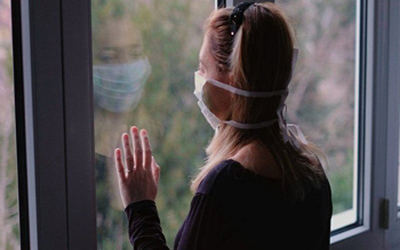

BIENVENID@ CONSIGUE AYUDA CON NOSOTROS
Psicología en Pandemia
Los indicadores de salud mental en nuestro país son alarmantes. Somos, tristemente, una “potencia mundial” en las tasas de depresión, estrés, consumo de sustancias, violencia intrafamiliar y de género, vulneraciones de derechos y suicidio, no solo a nivel adulto, sino también infantil y juvenil. Y estos datos críticos ya los teníamos antes del estallido social y del Covid-19. La emergencia actual ha venido a evidenciar no solo las enormes brechas y diferencias para obtener bienes y servicios, sino también en cuanto a las condiciones de vida y acceso a la salud mental, en un país en donde aún es un tema tabú reconocer que se tienen problemas de esta índole. Es en este contexto de enorme incertidumbre, de amenaza constante e invisible, que nos obliga a estar alejados y encerrados para protegernos, en que se hace necesario reconocer los sentimientos que afloran de inseguridad, ansiedad y miedo; y explorar nuevas formas de comunicarnos y de abordar estas problemáticas. Las nuevas plataformas tecnológicas nos permiten romper barreras y resistencias a los dispositivos presenciales clásicos, pero también nos imponen a los profesionales nuevos desafíos técnicos y éticos, pues comunicarse a distancia por una pantalla y micrófono es complejo, requiere de competencias comunicacionales “clásicas” y “modernas” ad hoc al entorno en que ocurre este encuentro; además de imponer que el profesional se haga cargo de todos los nuevos elementos que se visualizan al acceder al espacio íntimo de la persona a la cual atendemos, ya que ingresamos directamente a su casa y a las condiciones en que vive, a las modalidades de relación de quienes coexisten en ese domicilio, entre otros. En este nuevo escenario, los programas deben desarrollar estrategias de supervisión y acompañamiento a los profesionales, de formación y capacitación en estas instancias que nos resultas descocidas, además de recursos tecnológicos que permitan el correcto funcionamiento de estos dispositivos.